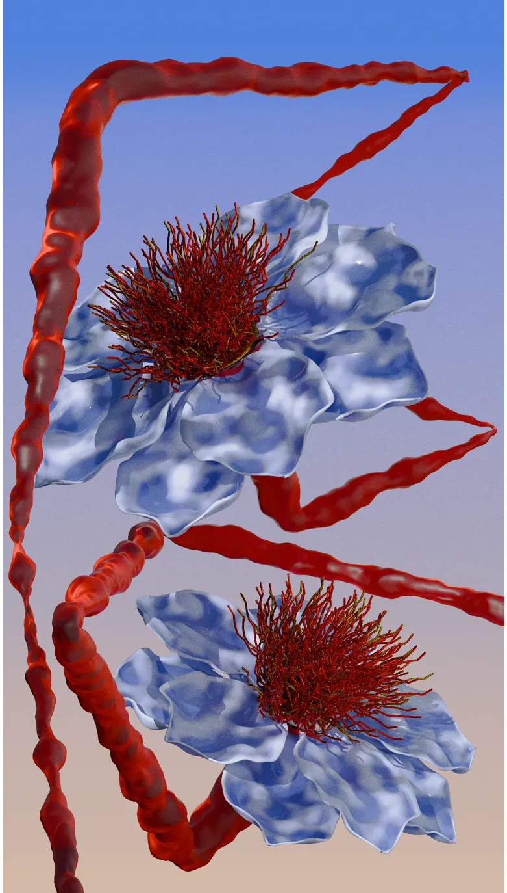
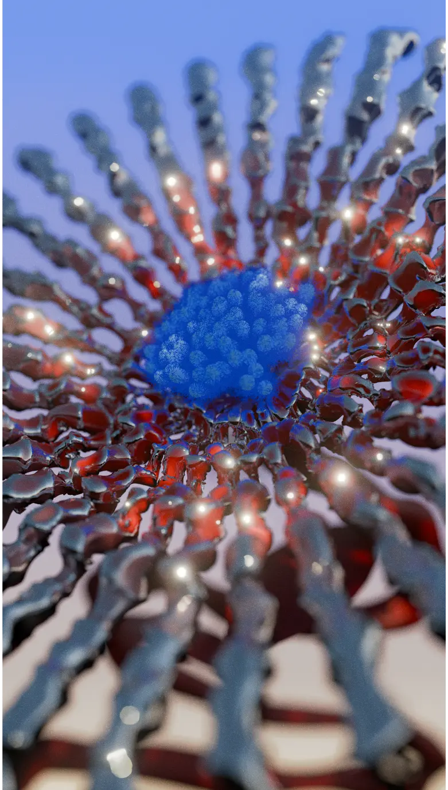
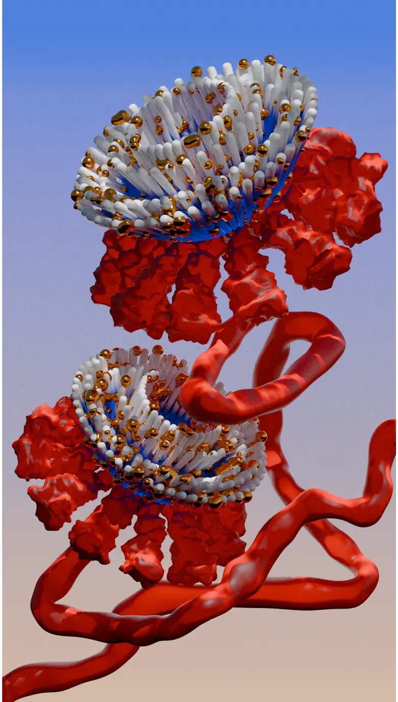

Created during a 3D modeling workshop exploring the theme "Green Lab," this triptych delves into the realm of vegetation and botanical forms. Drawing inspiration from Erwan Frotin's work and Japanese prints, the piece employs deformation, texture, and compositional methods to transform flowers into supernatural, otherworldly entities.




© 2025 Malcolm Semedo Barreto. All rights reserved.